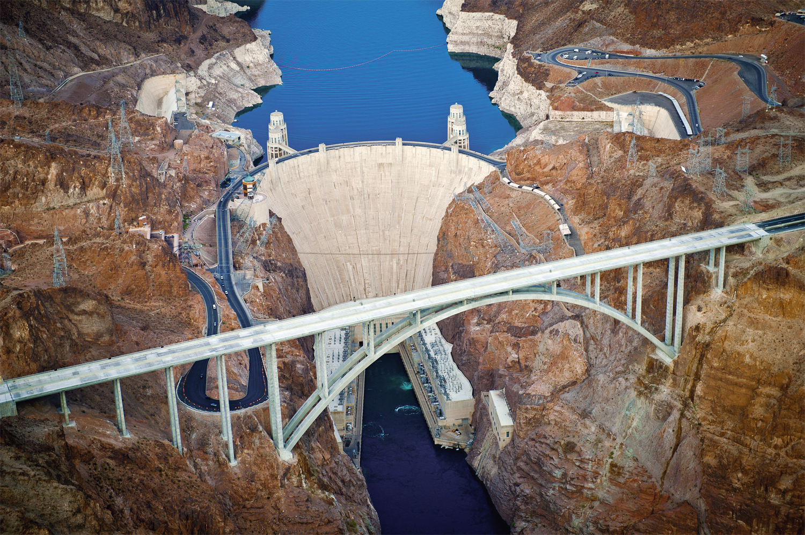
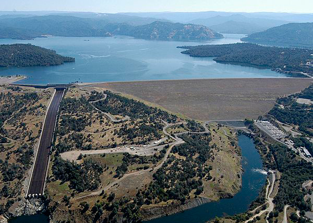

After the Second World War, many countries aimed to improve and enhance their strength in the international community and accelerate their economic development.
Dam provides multiple functions, including drinking water, flood control, irrigation,recreation, transpiration and hydropower.
The International Commission on Large Dams states that a large dam either is at least 15 meters tall from its lowest foundation to its crest, or it stores more than 3 million cubic meters of water with a height between 5 meters to 15 meters.
Among 140 countries, about 800,000 small dams and 50,000 large dams were built. There are an estimated 84,000 dams in the United States, impounding 600,000 mi (970,000 km) of river or about 17% of rivers in the nation.
The damming of great rivers is among the most dramatic, deliberate impacts that humans have on their natural environment. Nothing alters a river as totally as a dam.
A dam is an attempt to bring a river under control, to regulate its seasonal pattern of floods and low flows. A dam traps sediments and nutrients, alters the river’s temperature and chemistry, and upsets the geological processes of erosion and deposition through which the river sculpts the surrounding land. Such changes can throw an entire watershed out of ecological balance.
Formed by the damning of the Colorado River, Lake Mead, the nation’s largest reservoir, covers about 248 square miles and is capable of holding some 28.9 million acre-feet of water (an acre-foot is equivalent to about 325,000 gallons). The creation of Lake Mead (named for Elwood Mead, commissioner of the U.S. Bureau of Reclamation when the dam was being planned and built) flooded the community of St. Thomas, Nevada, and turned it into a ghost town. The last resident of the town, which was settled by Mormon pioneers in 1865, rowed away from his home in 1938. Today, the reservoir supplies water to farms, businesses and millions of people in Nevada, Arizona, California and Mexico. Lake Mead also is a popular site for boating, fishing and swimming; America’s first national recreation area was established there in 1964.
Oroville Dam is an earthfill embankment dam on the Feather River east of the city of Oroville, California, in the Sierra Nevada foothills east of the Sacramento Valley. At 770 feet (235 m) high, it is the tallest dam in the U.S. and serves mainly for water supply, hydroelectricity generation and flood control. The dam impounds Lake Oroville, the second largest man-made lake in the state of California, capable of storing more than 3.5 million acre-feet.
Bonneville Lock and Dam consists of several run-of-the-river dam structures that together complete a span of the Columbia River between the U.S. states of Oregon and Washington at River Mile 146.1. The dam is located 40 miles (64 km) east of Portland, Oregon, in the Columbia River Gorge. The primary functions of Bonneville Lock and Dam are electrical power generation and river navigation. The dam was built and is managed by the United States Army Corps of Engineers.
At the time of its construction in the 1930s it was the largest water impoundment project of its type in the nation, able to withstand flooding on an unprecendented scale. Electrical power generated at Bonneville is distributed by the Bonneville Power Administration.
Bonneville Lock and Dam is named for Army Capt. Benjamin Bonneville, an early explorer credited with charting much of the Oregon Trail. The Bonneville Dam Historic District was designated a National Historic Landmark District in 1987.
1.The Northwest does not need the electricity generated by the dams.
2.The four Lower Snake River dams are money losers for both tax- and bill-payers.
3.We have proof that restoring rivers recovers salmon.
4.We now have a clear understanding of the potentially catastrophic effects of warming on our remaining salmon.
5.Our endangered Puget Sound orcas depend on Columbia Basin chinook salmon.